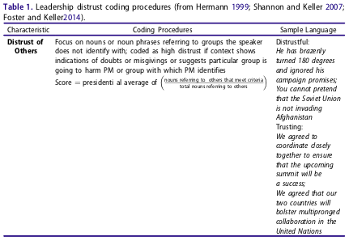
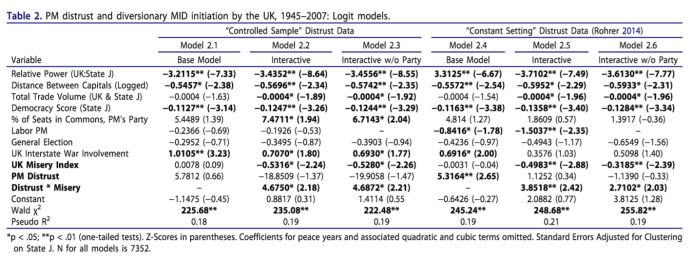
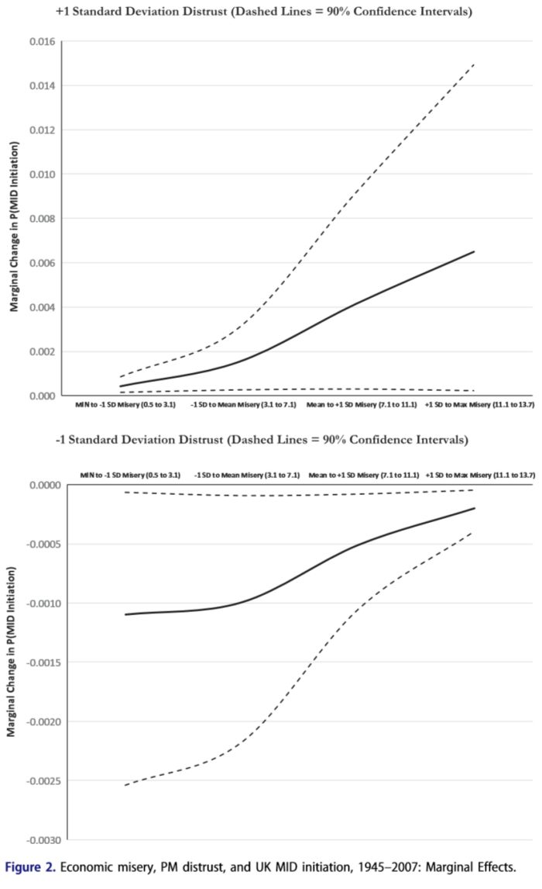
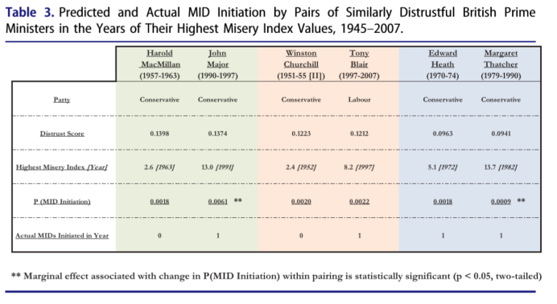

收录于合集

作品简介
【作者】 Dennis M. Foster是美国弗吉尼亚军事研究所国际研究和政治科学系主任，教授。他的研究兴趣是国际冲突的国内原因、领导人心理学与战争、造反者的战略选择、传统威慑与核威慑。Jonathan W. Keller是美国詹姆斯·麦迪逊大学政治科学系主任，教授。他的研究兴趣是外交决策制定与政治心理学、领导人风格、转移视线使用武力、外交决策中的冒险行为及启发式理论的扩展。
【 编译】 蔡 宇（中国人民大学，国政学人编译员）
【校对】 房宇馨
【审核 】 张晋岚
**** 【排版】 高 鹏
【来源】 Foster, Dennis M., and Jonathan W. Keller. “Single-Party Government, Prime Minister Psychology, and the Diversionary Use of Force: Theory and Evidence from the British Case.” International Interactions 46.2 (2019): 227-50. doi:10.1080/03050629.2020.1708741
期刊介绍
“International Interactions"是跨学科同行评审期刊，刊载具有原创性实证性、理论性与分析性的文章。该刊特别关注全球系统中行为体广泛的关系和互动，刊登以民族和宗教冲突、国际和国内冲突、冲突解决、冲突管理、经济发展、区域一体化、贸易关系、国际组织、全球化、恐怖主义以及地缘政治分析等主题的文献。2018年影响因子达1.419。
单一多数党政府，首相心理与转移视线的战争：
英国案例及其理论与实践
Single-Party Government, Prime Minister Phycology, and the Diversionary Use of Force: theory and evidence from the British case
Dennis M. Foster
Jonathan W. Keller
内容提要 本文对议会民主制国家中单一多数党执政的政府（Single-Party Government），首相心理对发起“转移视线的战争”（Diversionary Use of Force）的影响进行理论与实证研究。既有研究转移视线使用武力与政府内部结构关系的文献认为单一议会多数党组阁（Single Party Majority）的政府缺乏发起转移视线的战争的动力和能力。本文则认为政府内部结构和环境因素对战争决策的影响是模糊不清的。 作者假设单一多数党政府中首相的心理因素——特别是首相的不信任感（distrust），是他们评估结构和环境限制最重要的因素，进而影响首相是否决定将国内经济矛盾转化为对外战争。 不信任感强的首相倾向于发起对外战争转嫁国内经济压力，同时怀疑内阁中的部长企图放任经济困难动摇现任首相的权威。因此尽管首相所在党派在议会中占据多数，他也可能放弃调整经济政策度过危机铤而走险地发起转移视线的战争。本文选取英国1945～2007年间长达62年的单一多数党执政时期作为案例，对这一假设进行了部分检验。
文章导读
议会制国家中政党和政府的关系——特别是立法机关（议会）中单一多数党组阁的情况，是否影响国家作出发起国外战争以转移国内经济矛盾的决策？许多学者已经研究了美国总统制中转移视线的战争 （Clark 200; James and Oneal 1991;Ostrom and Job 1986），也有学者指出在民主国家中普遍存在将国内问题转化为对外战争的传统（Leeds and Davis 1997; Mitchell and Prins 2004; Pickering and Kisangani 2005; Tir 2010; Haynes 2016; Foster 2017）。但研究特定政治结构下政府转移视线使用武力的动机有何不同的文献较少。许多学者（Brulé and Williams 2009; Kisangani and Pickering 2009; Prins and Sprecher 1999）认为由单一多数党执政的政府缺少立法机构的制衡，政策制定和执行受到上下一致拥护，最不倾向于将国内经济矛盾转化为对外战争。同时由于议会的立法权和行政权日益合一，首相能够保持政策的稳定性，在外交政策的调整空间较小，不需要也不具有权力支撑其发起转移视线的对外战争。本文提出单一多数党政府发起转移视线的对外战争的理论假设作为补充。第一，政府难以用对外战争简单地转移国内经济矛盾。第二，政府的领导人往往能在内阁中采取强硬性的措施。 在其他条件不变时，结构和环境因素对政府发起武力转移国内矛盾的可能性的影响是不确定的。相反，一系列政治领导人心理学的文献使作者发现首相的认知框架可能影响政府发起转移视线战争的可能性。 本文假设当首相的心理侧面（特点）更倾向于不信任（distrust），即首相在此种心理状态下更倾向于使用粗糙的（blunt）和强硬的（forceful）政策手段、对批评和损失更加敏感并迫于将其他国内的行为体视为对自身权力的挑战时（Foster & Keller 2004; Hermann 1999），首相可能将经济问题夸大为危险和无法逾越的，易于发起转移视线的战争。作者将1945～2007年的英国政府作为单一多数党政府的典型案例，前期研究发现： 英国由于经济危机发起的跨国军事冲突（MID），与首相在下议院的讲稿以及下意识的言辞中表现出的不信任（distrust）程度具有相关性。 首相的不信任程度越高越有可能在经济危机中发起转移视线的战争。
一、单一多数党政府中的转移视线：
制度结构与竞争风险
**
**
单一多数党政府是否倾向于发起转移视线的战争？有的观点认为，单一多数党政府的首相受政府内部结构制约，往往不能单方面发起战争。并且团结的政府可以不受干涉地稳定经济，不必要为转移视线使用武力。也有观点认为，单一多数党政府中的首相在使用武力时障碍更少，且政府难以将政治责难和成本转嫁到其他国内政治行为体，改善经济政策面临着困难、风险和不可避免的艰难权衡。在这些情况下，武力转移经济矛盾是一个具有吸引力的选择。
二、领导人的认知心理和一党体制中的转移视线：
以不信任为中心
**
**
不信任（distrust）指一种认为他人的言论和行为不真诚，且往往怀疑他人行为背后动机的思维方式。（Tucker 1965; Stuart and Starr 1982）高度的不信任感放大了来自国内外行为者的威胁，促使领导人以“马基雅维利式”的对抗性政策行为应对威胁（Driver 1977; Holsti 1962）。不信任感强的领导人往往特别怀疑他们视为政治地位竞争者的行为动机。他们为了不出岔子凡事亲力亲为，并要求幕僚凡事按他的指示行事。不信任的领导人往往对批评敏感，并且往往留心对其权威构成挑战的行为。（Levine and Young 2014）
**在国内经济困难时期，具有不信任（distrust）特质的领导人对其权威的潜在威胁十分敏感，使他们过度关注本来由经济问题产生的政治责难。他们不倾向于依赖经济幕僚协调本就十分困难的经济政策， 往往独立行动 。**不信任型的领导人深陷于自身权威被经济低迷所威胁的臆想中，并不信任与他联合组阁的部长们，因为与希望度过经济危机的首相相比，这些联合执政的部长可能向媒体泄漏信息阻碍政府计划的实施，或者从内阁集体辞职。因此，作者得出了假设1:
假设1: 在单一政党组阁的议会制政府中，当政党首相表现出更高的不信任感时，经济低迷更有可能更有可能引发跨国军事冲突。
三、研究设计
**
**
由于缺乏单一多数党政府的领导人心理学的系统数据，本文通过1945～2007英国使用武力的历史事件检验这一多重模糊因素决定的事件。英国在长达62年的时间里，仅有1974年的2月至10月产生了“悬浮议会”（hung parliament），即执政党在下议院中所占席位不超过半数。
本研究中的因变量是威胁的发起。 在国际体系中一国对另一国家使用武力数据参考跨国冲突数据库4.0版。（Palmer et al. 2015）文章中分析单位是英国每年对某一国家发起军事冲突的概率。每发起一次冲突对应着一个因变量，并将0作为特殊值（Bremer 1992）。为减少普遍相关性，本文使用线性、两次方和三次方量表表示和平年份，或使用上一次英国发起军事行为之后的年份数表示和平的年数。(Carter and Signorino 2010)
主要的解释变量是英国首相的不信任（DIS）言辞评分。 在衡量不信任程度时，作者使用Hermann于1987年提出的领导人性格分析（LTA）中的领导人话语模型，通过话语背后的内容探寻领导人的心理模式。（Keller 2005）。领导人不信任程度的评分模型以表1为例。

作者从两方面将不信任（distrust）操作化。过去的研究中Hermann、Dyson、Rohrer等强调使用领导人不经修饰的随机问答隐含的“话外之意”测量的领导人心理特质。作者在此基础上记录英国首相对下议院进行外交政策报告的发言作为实验组，同时录下了演说后首相面临下议院质询时的随机问答作为对照组。这一实验反映了在外交政策相关议题之下，首相在不同情境下有意和无意的言辞反应。最终作者也利用实验组与对照组进行稳健性检验。
除领导人心理因素外，作者在原文分析中包含了数个控制变量，这些变量大多数处于国家层面和国际层面，并可能对国家发起转移视线的战争产生影响。第一，在国家间双边层面(dyadic level）英国与其他国家的相对权力变化(Bremer 1992)，可能使国家权力优势增大或权力接近发起转移视线的战争(Mitchell and Prins 2004)；第二，国家间的地理邻近可能使战争的可能性增大；第三，有学者认为联合民主制政体发起战争的可能性小（Russet & Oneal 2001）。同时作者对可能影响因变量发生概率的因素作了处理。第一，控制下议院的议席过于集中对首相发起战争决策的影响；第二，以0和1代表工党和保守党，控制保守立场对首相发起战争的影响；第三，控制大选年对总统发起战争的影响；第四，控制正在进行的战争对首相发起战争的影响。
四、结果 **
**
表格2展示了逻辑回归分析的结果。模型2.1～2.3展示了“控制样本”的不信任程度评级，模型2.4～2.6展示了在普通情况下所有首相反应时不信任情况的变化。 （具体模型及分析见原文）



如上所述，不论在“常量组”或“控制变量组”，表格2和图表2都清晰和稳健地支持了 假 设 1。 这 一结果证明 ：当“ 普通的 ” ( 如：“正常”信任程度的 ) 首相 处 于 单一多数党体制时，他们将不倾向于发起转移视线的战争；相反，转移视线的战争是单一多数党体制下，不信任程度高的首相常用的政策工具。 作者认为这标志着对既有理论的突破，并响应了广大学者强调“从领导人的视角理解国际冲突原因”的必要性的呼吁。
五、讨论与结论 本文发现，政治性的或结构性的因素并非对领导人发起转移视线的战争具有一成不变的影响。发起战争的决策还取决于领导人对其领导人角色的认知、对其他政治行为体动机、政策工具的合法性的判断。 通过对英国单一多数党政府的实证检验，作者指出经济危机并不必然导致领导人发起转移视线的战争。 具有高度不信任感（distrust）的首相在悲观情绪蔓延时更倾向于发起战争，相反不具有不信任感的首相不但不会发起战争，还会将注意力集中于国内经济治理。
作者认为未来领导人心理学与战争关系的研究可以从以下路径开展。第一，应当在不同政府结构中探讨领导人心理如何与制度共同作用；第二，应当探讨领导人不同的管理方式对政策预期的影响；第三，现有的研究往往引进领导人心理作为解释国内政治因素和外交政策行为的中介变量，旨在增强国内政治- 国际冲突模型的解释力。未来的研究将不仅关注单一议会多数党组阁的政治机制，还会研究不同政治机制下决策者如何回应国内外压力。


国政学人
支持学术公益与知识传播
微信扫一扫赞赏作者 __赞赏
已喜欢，对作者说句悄悄话
取消 __
发送给作者
发送
最多40字，当前共字
上一页 1/3 下一页
长按二维码向我转账
支持学术公益与知识传播
受苹果公司新规定影响，微信 iOS 版的赞赏功能被关闭，可通过二维码转账支持公众号。